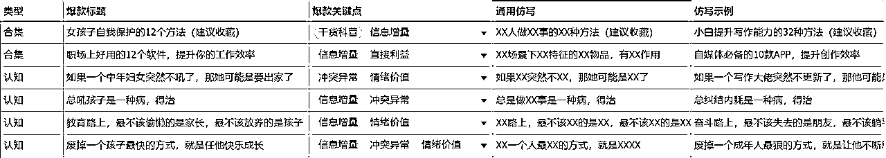
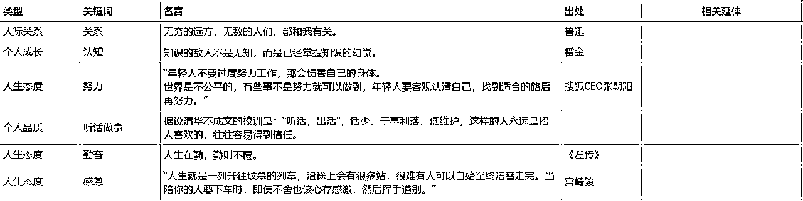
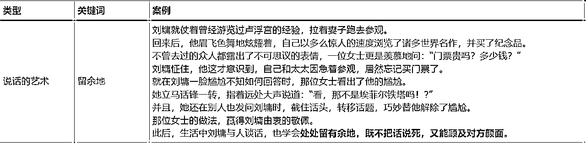

来源：https://yxy2hhcyyby.feishu.cn/docx/X2kKdFLuToEOKixhkWlcZVQAnLb
生财圈友好！
我是开卷，985写作硕士，6年文案，生财二年级生，很高兴再次和圈友在公众号项目相见。
开卷从2024年6月底开始做公众号爆文项目，目前已经跑通了几个稳定运营的爆文号和一个近期起步的IP号，半年累计涨粉2W+，变现5位数，最高单篇收益6000+，最高单日收益2700+，IP号日均涨粉100+，每天都有私域新增流量，11月航海期间已经通过分销变现。
此前，我写过一篇精华帖：《公众号新手首次航海冲出百万爆文，单篇收益6000+，单账号变现5位数，纯手搓&AI辅助手搓都能爆，我做对了什么？》，这是7月对航海期间自用的爆文写作流程梳理，后来有圈友告诉我，参考了我的思路，也出成绩了。
8月，我在研究如何在0-1的基础上放大，9月航海，赶上小绿书风口，浅尝了一些甜头，10月，参加了圈友生财大师姐@梁靠谱 发起的公众号暴走，启动IP号，11月中旬，新一期的公众号航海开始。
24年下半年我放弃了其他任何平台和项目，一直在研究公众号。
这期间，我连续参加了3期公众号航海，做成过几个账号也作废过几个账号，并且把爆文号的经验逐步迁移至IP号。这段时间的经历，让我更加坚信：公众号值得做，并且值得长期坚持做。
25年，开卷依然会聚焦公众号写作，并逐步放弃游击战式的玩法，深耕更擅长的领域，做数量和质量双稳定的账号。今天，我会结合做公众号半年来的经验、思考、卡点来梳理公众号爆文到IP的核心思路，给想在公众号爆文、内容创作、写作能力提升的圈友提供经验参考，由于内容较多，这次的复盘分上下两篇：
上篇是开卷从公众号实战摸索出的有效经验，是我做公众号项目的解题思路，如果你在做公众号的具体问题上卡住了，问的是“怎么办”，试试在这里找答案；
下篇是做公众号过程中遇到的常见卡点，如果新手期在同一个问题反复纠结都没有答案，问的是“要不要”，这个问题可能是开放式问题，试试在这里找答案。
以下是本次复盘帖的目录，供圈友快速找到有效信息，你也可以通过左侧目录直达相应位置：
上篇：公众号技巧
下篇：公众号心法（抗焦虑版）
这里，主要分享做公众号期间，积累的一些有效个人经验，建议公众号新手在航海手册的基础上阅读，否则，这些内容可能看起来可能信息量不够。
另外，8月摸索过如何放大账号之后，我还是回归了纯手搓，所以这里不涉及AI批量运营账号的技巧；10月之后，我放弃了什么火就写什么的思路，在选定的几个方向扎根，所以这里更多的是关于内容质量提升的分享。
希望这部分内容，对想提升内容质感和有效输出效率的你有所帮助。如果没有特别分开说明，就是对爆文号和IP号通用。
在所有技巧之前，说一个可能堪称玄学的概念：起号。
开卷做过很快有流量的号，也做过流量像休眠火山的号，如今，我决定忘记“起号”这回事，尤其是做爆文赚流量主收益。
大家常说的“起号”，里面有一个重要问题，就是选领域，或者是账号定位。
开卷实操的经验是，如果你做爆文流量主，建议每个新号选择3个方向去测试，测出来了哪个发哪个。因为有可能有个领域你这段时间怎么写，都不太好拿到流量，但是测试的领域过多，方向太散，导致你的标签太乱，平台不知道把内容往哪个方向推。
开卷曾经有个号，基础流量起来之后，因为有点贪心也有点着急，一天多篇多个领域发文，没多久，这个号就玩不动了。在转领域的时候，也建议小步测试，不要5678个领域都放上去盲测。
如果你做IP，但是和开卷一样从小白开始，有可以分销的产品和不是非常深入人心的定位，开卷也建议你把想做的方向缩小到3个去测试，像开卷做IP号，不知道到底发什么，就选了三个方向：读书、写作和赚钱。
以我做得并不顺畅的IP号为例，简单和圈友分享一下，账号的方向是怎么定的：
没错，最后就是方向3跑出来了，后面我也会在下篇的“要不要换方向”简单说一下之前不行，现在为什么又行了。
举这个例子，就是希望精细化运营账号的朋友，选定每个方向，最好知道选择的原因是什么，一方面是做好预期管理，另一方面是不管哪个方向跑出来了，你都可以有针对性地精准发力，对没有通过自媒体独立变现过的朋友而言，这还意味着考虑变现闭环。
爆文流量主同理，虽然不需要考虑变现产品和变现难度，但是需要你知道跑出来的这个账号是在满足哪些人的哪些需求。
对了，选方向的前提是，你要在这个方向，有持续输出的能力。
个人IP比较强，或者领域比较明确的朋友，可以先不考虑这些，咱们接着往下看。
如果你是自媒体新手，建议先看公众号爆文航海手册找对标的内容，找选题和找对标经常是互补的，开卷这里说的找选题，是在有了第一批对标账号之后，重点解决账号起步期的第一批选题。
以找职场选题为例：
个人建议把最有感触和印象最深刻的选题放在第一组，能写但是还要补充信息或者成文难度较大的放在最后一组，建议先写最想写和最有能力写好的，能一定程度上减少因为写作素材不够对文章效果的干扰。
后面需要准备的素材和补充阅读的资料也有时间准备，如果最好的和差不多能写的都写完了，写到难度最大的还没什么水花，最后几篇放弃也不可惜。
注意，这里之所以用“职场”举例，就是这个方法，对爆文流量主和IP号，都是可以通用的。这也是我先在爆文号上测试，后面在IP号也验证过的方式之一。
就是“爆款总是重复的”，只要你想写爆款，就要知道，同一个爆款选题，会有不同的人为了分流量而去写，也会有同一个作者尝到了甜头，想再分一波流量而写，不同作者之间取交集，同一作者不同时期文章取交集，都好用。
开卷最开始尝试过用数据网站和直接仿写对标，但是总觉得在精准度和方向感上差点东西，直到开始用取交集的方式，确实少做了很多无用功，也比之前更少浪费选题。
还有一个“榨干自己”的方法：一旦你写出了小爆款甚至大爆款，在公众号后台数据里的“推荐诊断”中，如果推荐曝光超过90%，这个选题大概率还可以再写一次，或者，用“微创新”的形式再写一次，这也是有些博主反复写一个选题的原因之一。
什么是微创新呢？我们在标题里看。
在6月航海的复盘里，我给圈友的一个建议是，如果你不知道什么是好标题，可以适当沿用部分经典标题，比如：《一个普通女孩的十年》、《有些人，撑不到天亮了》、《稻盛和夫：人的成长，始于三次觉醒》等等。
但是，如果你只会照抄标题，会感到十分局限，怎么办呢？
这个时候，可以试试“微创新”，即旧元素的新组合，再简单一点就是排列组合，我更愿称它为：
接下来用几个“个人IP领域”爆款标题来举例，睁大眼睛看好变戏法：
爆款标题1：一定要大量输出：你不是文笔差，而是不知道这4个网站
这里的关键词是输出、文笔和网站，很明显针对的是想提升写作能力的人
如果再写两篇类似的，可以写：
一定要大量输出：你不是文笔差，而是不知道这4个APP
一定要大量输出：你不是文笔差，而是不知道这4个写作方法
这两个例子，是替换解决方案，就是同一个人群，同一个问题，有不同的解法
接下来，我们再换
一定要大量输出：你不是写不出来，而是不知道这4个素材网站
一定要大量输出：你不是写不出来，而是不知道这4个写作方法
这两个例子，是替换痛点，就是同一个人群，不同的问题，相似或者不同的解法
接下来，我们再换
一定要大量阅读：你不是读书慢，而是不知道这4个阅读方法
一定要大量赚钱：你不是没资源，而是不知道这4个搞钱信息差
这两个例子，是替换领域，因为通过前面的拆解，我们知道这个标题套路就是：
一定要大量XX（领域关键词/人群需求）：你不是XXX（痛点），而是不知道这X个XXXX（解决方案）
接下来，无论换什么领域，扎什么痛点，都是选词填空。
爆款标题2：下班后死磕这3个副业，就算裁员也不怕！
这里的关键词是下班后、副业和裁员，很明显针对的是上班族
如果再写一篇类似的，可以写：
下班后死磕这3个技能，就算裁员也不怕！
下班后死磕这3个风口，就算裁员也不怕！
这两个例子，是替换解决方案，就是同一个人群，同一个问题，有不同的解法
接下来，我们再换
宝妈死磕这3个技能，就算裁员也不怕！
下班后死磕这3个风口，就算裸辞也不怕！
这两个例子，是替换人群，就是不同的人群，同一个问题（不上班），相似或者不同的解法
接下来，我们再换
恋爱脑死磕这3个技能，就算分手也不怕！
大学生死磕这3套话术，就算套话也不怕！
这两个例子，是替换领域，因为通过前面的拆解，我们知道这个标题套路就是：
XX（场景/人群）死磕这3个XX（需求），就算裁员（痛点）也不怕！
看，无论换什么领域，扎什么痛点，还是选词填空。
有意识去做这样的拆解练习，等你熟练了之后，找选题时用到的很多爆款选题，都可以做成『排列组合』，即选词填空。
当然，还有些不那么好改的，你就可以在你拆解的这些套路中，结合文章内容，适当增加或者替换一些元素。
比如：
原标题：人一定要刻意研究赚钱
替换的标题：大学生/宝妈/小镇做题家……一定要刻意研究赚钱
尤其是做精准人群账号，把别人的标题人群替换成自己锁定的人群，言之成理即可。
一定先精细拆解，才知道如何灵活运用。
注意，这里的排列组合，并不是说你对标了10W+的标题，这样改了，也能10W+，只是它会比你写干巴巴的标题或者自嗨式的标题更有利于被系统识别，从而获得推荐。
可以试试看，如果你是教人沟通的沟通教练，同样的内容，用《今天见到了一个不会说话的大学生》和《大学生死磕这3套话术，就算套话也不怕！》，一定是后者有更高的概率被推荐。（你别笑，经常写前一种标题的咨询师/教练还挺多的）
你以为这就完了吗？当然没有！
遇到大而化之的标题，没办法拆，怎么办呢？别慌！既然能精细拆解标题，那么能不能精细拆解内容呢？
来，跟着开卷看另一种戏法，尤其是做IP向公众号的圈友们，下面这个方法划重点：
当我们看到“泛泛而谈”的标题，一定要在拆解的基础上合理联想，尤其是往认知和转化方向联想。
举开卷自己的3个例子：
爆款标题1：《发财，就是每天循环这5个动作》
对标号写法：5种赚钱认知/习惯/思维，纯干货，赚流量主收益。
开卷写法：销售成交的5步框架，附上带二维码的产品海报，粉丝才2K左右时，阅读已经破千了。
爆款标题2：《一个人就能闷声发大财的高利润生意》
对标号写法：揭秘小众的高利润生意，解析高利润的思路，赚流量主收益或者转化搞钱社群
开卷写法：生财大师姐年入千万的关键点，用粉丝能接受的方式去拆解靠谱吸引人的地方，评论区置顶引导感兴趣的人跳转到《发财，就是每天循环这5个动作》，即使没有直接插入产品海报，也能让感兴趣的人看到产品介绍，这篇文章阅读3.2W，转发近千。
爆款标题3：《想赚大钱，你得有人带，有人帮》
对标号写法：赚钱过程中贵人的重要性，偏搞钱认知和人情世故之类，赚流量主收益或者转化搞钱社群
开卷写法：生财圈友在做副业的过程中受到贵人帮助，并且做出成绩之后成为朋友们的贵人的故事，评论区放粉丝福利，引导粉丝到私域做相应项目，这篇文章阅读1.3W，转发800+，有几十个为项目而来的咨询。
开卷知道，这3篇文章如果直接写硬广，数据一定不好看，就结合产品和成交路径，赋予爆款标题新含义，你可以把它理解为“演绎思维+逆向思维”的结合，写成“软广”。
多想想你看到的爆款标题和你的业务有什么关系，用半推半就的方式去写，或许能拿到更多流量，这是开卷前些年给品牌写软广的常用方式。
类似的操作还有，关系类的选题，比如“不要高估你和任何人的关系”，可以写人情世故、与关系相关的认知，最终转化情商课，成长类的选题，比如“不要再搞任何和生存无关的个人提升”，可以写成长相关的认知，最终转化搞钱项目或者赚钱技能课，更多玩法需要大家结合自己的领域多去琢磨。
古人说，胸有成竹，好文章的大部分功劳在框架。
开卷对框架最直接的体验是：如果你在一个领域有了不错的积累，那么当选题定下来的时候，文章完成度已经80%了。因为定了选题，你一定知道文章框架，就能把你的观点和素材放在合适的位置，剩下的工作只是把文字敲出来和稍微润色而已。
这就是我想呈现的，搞定框架，让文章自己长大。
开卷今天和你分享的就是我做公众号期间，最常用的4种框架，学会它们，能覆盖80%以上的常见文章：
这一结构源自《金字塔原理》，如果没有读过原书，可以直接理解这几个关键点：
S（情境）：告知背景，比如职场内卷
C（冲突）：明确问题焦点，比如无效加班和形式主义
Q（疑问）：思考背后原因，比如管理制度、环境压力、个人认知等等
A（答案）：提出观点或者解决方案，比如你认为如何才能避免此类事件的发生
如果你赚爆文收益，这种结构非常适合分析社会事件，热点文、观点文都很常见，也是很多大号常用的文章结构。
如果你做IP号，它是很常见的解决问题-成交转化套路，假设定位是沟通教练，试试看：
S（情境）：告知背景，比如婆媳矛盾
C（冲突）：明确问题焦点，比如两代人的思维观念和生活习惯差异
Q（疑问）：思考背后原因，比如暴力沟通、情绪化表达、难以换位思考等等
A（答案）：提出解决方案，比如一个沟通策略和一套沟通课
这样一篇文章写完，开头有场景感，中间有获得感，结尾有救命感，成交会比强行说理更轻松。
三明治结构就是最常见的总分总结构，实际的阅读写作中，会看到各种形式的总分总，有纯观点的，有观点和故事结合的，也有其他更有创意的内容，总体来看，在一定的内容长度里，素材越丰富，排布越清晰合理，这份“三明治”看起来越可口，因此，它也是覆盖面特别广的框架之一。
开卷之所以用“三明治结构”这个标题，就是想提醒你：如果你看到了一些比较特别的或者非常欣赏的总分总形式，可以把它的写作模板积累下来，之后想写类似的结构，可以直接套用，这也是让文章自己长大最好用的方法。
爬楼梯结构是开卷自用的一个俗称，代指的层层深入的说理或者升级打怪的故事。
在观点文中，递进式结构很常见，因为说理层层深入，会让人越看越爽，适用于对热点事件的深度剖析。
在故事文中，新媒体常见的写法解决了一个又一个的问题从而达成理想目标的故事，适合IP出道文和成长类故事。
这两类文章有个共同点，都是逐层深入，读者的思考和情绪都相应上了一个台阶，所以我称之为“爬楼梯”。
举个例子：
观点文爬楼梯：
热点事件是什么（起点）——主要矛盾是什么（楼梯1）——矛盾为何如此激烈（楼梯2）——激化矛盾的后果是什么（楼梯3）——引导思考（终点）
故事文爬楼梯：
主角原本的生活状态如何（起点）——想要得到什么（楼梯1）——得到什么之后发现了什么？更想要什么？（楼梯2）——想要的都得到了之后，生活发生了哪些变化（楼梯3）——主角当下的状态如何（终点）
这种结构中，起点和终点是相对明确的，主要在于在中间的楼梯如何把整个故事或者观点串联起来，让起点到达终点的路径合情合理，找准相互衔接的楼梯，就是串联起文章脉络。
拼盘式结构也是我自己用的概念，是指那些看起来素材很丰富，让人眼花缭乱的文章，特点是信息密度大，逻辑未必很强，但不凌乱。
最常见的有：盘点类、清单类、热点类、合集类等等，当你想写的内容有“大而全”的特质时，就可以考虑以时间/空间/类型/风格等关键词来把它们合理串联起来。
比如：
IP出道文：《一个普通女孩的十年》
干货合集：《布局2025：普通女生的顶级自律清单》
图片合集：《看！这就是武汉！》
专题合集：《请回答1993，中国文艺伤心往事》
如果你想写的是某一类人或事，但光是直接素材就能引发很大的情绪波动，即使没有很强的逻辑关系或者深度思考，用合适的方法串联在一起，就能有不错的效果。
开头写得好，读者才能跟着你的思路走下去，很多完读率不行的文章，就是读者被你的标题吸引之后，看了你的开头半天没进入正题，就不感兴趣划走了。
以下分享开卷写作时最常用的5种开头：
痛点式
直击痛点，是抓住读者最常用的方法，常见于提出解决方案或者引发思考的文章
比如：
职场痛点：加班、内卷、内斗、薪资、裁员等
宝妈痛点：时间管理、身材管理、育儿理念、辅导作业等
中年人痛点：人际关系、收入瓶颈、家庭矛盾、身心压力等
痛点式的文章容易让人感同身受，很容易吸引精准人群，用痛点式开头最好的方式就是积累爆文中的常见痛点。
话题式
话题式开头利用的是大部分人喜欢凑热闹的心理，直接借用知乎高赞话题、微博热搜等话题切入，容易吸引普遍关注。
对不了解话题的人而言，话题本身意味着信息增量和情绪增量，对了解话题的人而言，对话题的深入分析还意味着思考和互动。
常见的就是：
微博上有个问题：你最焦虑的是什么？
知乎有个XX话题，一个高赞答案是……
话题直接切入，短平快的方式，也非常符合新媒体阅读特点。
场景式
有些痛点也是以场景描写的形式出现的，为了和痛点区分开，这里的场景开头，指人物稿/故事文中的场景切入，以及观点文中有场景感的开头。
比如：
个人IP领域开头：昨天，和闺蜜一起去看了《好东西》，本以为……却没想到……
人物稿/故事文开头：直接写人物所在的冲突环境
场景式开头的好处是像看电影一样，让人有身临其境之感，容易吸引读者沉浸式阅读。
金句式
最常见的就是XX说，这种金句往往还绑定特定的名人，名人的流量和金句的观点，都容易引发讨论度。
金句式开头在读书、文案、情感鸡汤、认知提升类文章中十分常见。
悬疑式
悬疑未必是惊悚，主要是有冲突反转，容易引发好奇。
常见于故事曲折的人物稿、深度解析类和认知提升类文章。
比如《<都挺好>没说破的真相：世界正在狠狠惩罚溺爱孩子的父母》，文章开头通过正反对比，快速提出“最吊诡的事”，吸引读者跟随作者阅读。
如果开头决定点进来的读者愿不愿意继续读下去，结尾就决定了多少人愿意把你的文章转播出去。
所以开卷在写结尾的时候，都会带着特定的目标，在这6种结尾里面，选择最合适的一种：
互动式
如果文章主体是多方声音，比如有争议的热点，多方视角不同，或者双方争执不休，为了引导读者说出自己的观点，可以在结尾引导读者互动，比如“你有什么想法”或者“你更支持谁”用问句结尾，很容易引发思考并激发读者评论。
呼吁式
如果文章关注的是负面消息，或者某个亟待解决的问题，比如《小小的我》的影评最终落脚到对边缘群体的关注，文章结尾就可以呼吁大家在关注电影的同时，关注身边的边缘群体，传达正能量，容易引发共鸣，如果适当引导，这类的文章转发数会很高。
祝愿式
在情感文、故事文、鸡汤文中，如果是苦难开局，最终挣脱苦难，或者整体文风偏温馨治愈，结尾都可更进一步，表达对未来的美好期待，都容易给人信心，安抚读者情绪，也容易让读者自发转发至亲朋好友之间，表达祝愿。
升华式
常见于在观点文的正文部分正反对比或者层层深入分析之后，结尾整体升华，引入一个更高级的理想状态，让读者感受到醍醐灌顶，有更强的收获感或情绪波动，点赞和转发的概率都比较高。
金句式
利用金句结尾，会让文章显得旁征博引且意味深长，容易引起点赞和转发，此外，文章结尾的金句，很有可能会被读者复制作为评论，如果你能在结尾写出读者心声，就很有可能提升评论数量。
悬念式
蹭热点时，如果未来情况不明朗，可以用悬念结尾，比如电视剧剧情走向，热点事件的舆论发酵及背后真相等等，留足悬念也可能引发读者的猜想和评论区互动。
金句的魅力，一在蓄力，二在情绪，是文章的画龙点睛之笔。金句高度浓缩，浓缩的是什么？信息、情绪和共识。
金句常见的用法有两种，一种是引用，另一种是化用（改写）。
如果直接引用金句，可以丰富素材，增强说服力。常见的直接引用，如：情感心理领域中心理学家的观点，家庭教育领域中传统文化名言，商业领域中商业领袖的观点等等。
更常见的是，有些文章的开头就是，罗翔/莫言/余华说：……
开头直接用名言把情绪燃爆，也能吸引读者顺着情绪阅读，只要后面的整体方向和金句主题相关，文章条理清晰，节奏适中，就可能跑出不错的数据。
需要注意的点是，虽然金句网站很多，但是在爆文中被验证过的金句效果可能更好，如果不是有特殊考量，建议优先使用已经在其他爆文中出现过的金句，尤其被反复划线的金句，说明它能引发很多人共鸣。（是的，更建议在拆解优质文章时，把金句顺手保存下来。）
另一个实测好用的收集金句的方式是，刷小红书时看到互动数据很高的金句及时保存，或者直接在小红书搜关键词采集，某种程度而言，这也是被验证过能引发共鸣的金句。
如果化用金句，可以让你的观点更容易被人理解和接受，化用有两个方向，一个是相关或者相似方向的延伸，适用于特定主题，另一个是相反方向的质疑或解构，在调侃或者吐槽风格的文章里很常见。
化用或者自创金句，需要平时对共鸣度比较高的金句有意识联想和改造，或者对自己感兴趣的话题进行深度思考和凝练表达，善用修辞手法，刻意练习。
这里给大家分享一个开卷用得比较多的化用金句的方式：改写广告语。随处可见的广告语，可能就是沿用的耳熟能详的金句，以及有些广告发布之后，网友恶搞的玩法，平时多留点心，就会发现很多套路。
开卷在24年8月就考虑提效和放大，所以考虑AI提效，但是AI虽然增加了出文数量，随之而来的还有改稿压力。
如果是纯手搓，我几乎不改稿，如果AI辅助手搓，写完会大致检查一遍，但是如果依赖AI提示词出文，手动改稿很花时间。
开始，我以为是提示词不对，所以找了很多提示词来测试，但是达不到理想效果，9月参加爆文航海的同时也上了AI写作航海的船，也是这次AI写作航海的经历，让我知道：文章达不到理想效果，不是提示词或者工作流程的问题，是改稿这件事值得仔细琢磨。
不管是AI出稿没有人味，还是手搓过于“平铺直叙”、“废话太多”、“不吸引人”等等问题，需要最终整体调整。
这部分的内容，对手搓和AI出文总是不满意，但又不知道问题出在哪里的朋友，可能会有些帮助，由于时间有限，这里谈整体方向，不谈具体细节。
对AI写作而言，只要写好提示词，结构基本上不存在很大问题，这部分，反而是AI写作的优势。
如果你是手搓，不管是赚爆文收益还是做IP号，如果有人感觉你的内容太“凌乱”，思维过于跳跃，想到哪里写哪里，很可能是在结构上出了问题。
开卷看过有些文章用了爆文标题，但是数据很一般，为什么呢？整体结构变了，爆文是层层推进，改写后的文章变成了平铺直叙甚至东拉西扯。
如果是个人IP文章，写咨询师手记，写生活观察，写成长心法等等文章，这个问题十分常见，因为作者想到哪里写到哪里，经常第一部分和第三部分混讲，第三部分又跳回第一部分的细节，让人感觉云里雾里。
文章发出去之前，没法梳理清晰的脉络，发出去之后，别人说读不懂，太乱了，都可以想想：结构如何调整优化？
有些文章一眼看出AI味儿，关键在于措辞，尤其是大量的书面语和“假大空”式措辞。
如果你不知道这是什么味儿，就想象一下你在和朋友说话，朋友在给你念某个乡镇粗糙的五年规划。
AI味儿，仅此一种吗？当然不是！还有一种特别常见的是，你找的对标是高考高分作文水准，AI出稿是小学语文作文水准，合理且通顺，但就是感觉你和巴菲特共进午餐，他聊人生和投资，你聊九九乘法表。
这种情况，AI和手写一样常见，尤其是如果你对标的文章是深度思考类的文章，针对特定人群，含有大量的潜台词和热梗，AI无法挖掘深层含义，手写也写不出别人的深度，很容易出现“表达降级”，这种降级在一定程度内可以理解，但是过于浅显直白，就给人感觉比较幼稚，也会显得文章信息增量不足。
如果有这种情况，一定要注意，尽可能多地使用更凝练的语言，尤其是某些共识类地表达，一个词可能就是一类标签，比如情绪价值、生存技能、认知升级之类的常见概念，不要再次稀释它的内涵。
还有一种AI味儿，是表达OK，措辞精准，但总感觉缺点什么，读起来感觉像是心如死灰的人在自言自语。
对，没错，缺的就是“心跳感”，用写作的语言来表达，就是节奏感。
为什么很多官方报道读得头疼？为什么没有情绪起伏的人写的文字读得让人失去耐心？
无论是古人讲的起承转合，还是国外讲的“英雄之旅”，文章吸引人的一个因素，在于有心理层面的起伏波动。
想象一下心电图，如果你的文章有高潮也有低谷，是符合人类正常体验的，但如果你的文章一直是一条直线，无论在高位还是在低位，都让人难以停留。
AI写作的优势是很有逻辑性和框架性，但是在叙述节奏上，要么一直平静如水，要么一直张牙舞爪，如果AI写作指令里对节奏没有要求，会发现AI写的内容，很难贴近人的心理。
手搓也会有这种问题，尤其是转述别人的故事，或者写认知类的文章，并且你从心底里感觉你写的东西与自己无关，在成果层面，就会显得像冷漠的旁观者。
情绪是个很奇妙的点，用得好，直上青云，用不好，坠入深渊。
前面的节奏，说的是文章内部逻辑层面，这里说的情绪，指的是作者的写作状态和读者的阅读体验层面。
如果你的AI已经被你调教得比较善于用情绪化表达，你会发现，它实际上就是在使用语料组合规律，尤其你长期写某个领域的时候，你会发现它都是固定模式搭配，就像什么呢？
没有恋爱体验的人，强行去写言情小说，他只会写脸红心跳，只会写眼里都是她，但写不出真正像个在恋爱中的人会说出来的情话。
这个例子举得比较特殊，就是想让圈友直观感受情绪状态对写作表达的影响。
不要以为只有AI会这样，现在很多人不敢表达也不会表达情绪，所以直接封闭了情绪感知力，所以这种毫无波澜的情况还挺常见。
如果同样的选题和相似的表述方式，一个让你又哭又笑，一个感觉隔靴搔痒，一定是后者的情绪上，还有提升空间。
整体改稿思路总结：
改文章结构，清晰有序；改具体措辞，言之有物；
改行文节奏，张弛有度；改情绪状态，激发共鸣。
其中，文章结构和具体措辞，会相对直观，容易修改，但是行文节奏和情绪状态，需要你首先是好的读者，熟悉自媒体创作套路，才能从读者体验层面反推写作和修改的细节。
这里说的运营，是指除了写文章之外的其他操作。不管是爆文为了收益，还是IP号为了引流涨粉，提升运营细节，都能优化最终结果。
互动指令
点赞、收藏、转发、关注、星标等指令一定要清晰。
点赞、收藏、转发可以给一个具体的理由，可以温情，可以搞笑，也可以有创意，结合账号或者文章风格来定。
关注和星标，最好说明读者做这个动作的价值，比如关注有惊喜，关注不迷路等等。
评论区
爆文号，评论区可以主动引发讨论，适当放出一些有争议性的观点。
IP号，如果担心文章中的营销信息过多观感不好，可以在保障文章质量和阅读观感的前提下，把营销信息放在评论区置顶，比如活动信息、互动指令、粉丝福利等等。
菜单栏
根据你希望粉丝使用账号的方式，设置菜单栏，可以提升优质文章的阅读或者粉丝转化。
常见的有根据文章内容分2-3栏目，或者精华内容+活动+联系方式分3栏。
总之，你希望粉丝关注公众号之后重点关注的类目和相关内容，都可以在菜单栏设置。
自动回复
关注后的自动回复可以引导粉丝加微信，也可附带相关关键词，引导粉丝进一步阅读
关键词自动回复，可以设置跳转你希望读者看到的重点文章
标签
账号运营初期，打号相应的标签，比如职场、宝妈、赚钱等等，有利于感兴趣的读者进行关联阅读，一定程度上能提升阅读量，但是爆文号稳定运营之后，加标签，可能会影响文末广告的露出，需要自己权衡处理。
每个人对“素材”的定义不同，开卷的素材库就包括：标题库、金句库和素材库（理论和故事）。
分别简单展示一下开卷的爆款标题库、高能金句库和素材库，供你参考：
爆款标题库

第1列【类型】是我自己对标题的归类，代表着以后我需要用什么类型的标题可以参考；
第2列【爆款标题】是我采集的爆款标题没有做任何修改的原句，待后面3列拆分和二次加工；
第3列【爆款关键点】是我从中提取出的认为有价值的爆款元素；
第4列【通用仿写】是从标题中提炼出表达框架，方便以后套用；
第5列【仿写示例】是为了加深印象，直接顺手写个和自己选定的领域相关的类似标题，方便记录甚至直接选用其中的选题。
爆款标题库，除了学会标题套路，还能学会使用具有金句潜质的表达，锻炼对选题和爆点的感知度。
高能金句库

第1列【类型】是我对金句的归类，代表着以后我需要用什么主题的金句可以参考；
第2列【关键词】是金句中的核心关键词，帮助使用时进一步定位和筛选；
第3列【名言】是金句原文；
第4列【出处】是为了让金句信息完整可信且可能其他相关主题金句；
第5列【相关延伸】是记录相关的素材或者可以发散联想的点，养成自己的语料库。
高能金句库，除了文章关键处画龙点睛，还能学会更多更有深度和创意的表达，提升文章质感。
有料素材库

第1列【类型】是我对素材的归类，代表着以后我需要用什么主题的素材可以参考；
第2列【关键词】是素材中的核心关键词，帮助使用时进一步定位和筛选；
第3列【案例】是从爆文中复制的素材原文，如果可以从不同角度发散阐释，还可以记录可以拓展的方向；
有料素材库，除了填充文章需要的素材，还能完整感受爆文的表达，形成素材网，在文章结构定下之后，这些内容或许能填充50%的血肉，框架+素材，文章的完成度基本上有了90%。
在做公众号项目初期，我也很怀疑这些笨办法到底是不是白费力气，经过半年实测，切实感知到积累素材库就像滚雪球，不断形成肌肉记忆并长出新的触点，很大程度上解决了用AI找素材总是“炒冷饭”和“鬼打墙”的问题。
还有一些不好归纳进以上内容，但对我确实有帮助的小习惯、小方法、小资料，供圈友灵活参考。
沉浸。
没错，如果你是手搓，这个方法绝对是最适合你的。
你要写吐槽类的文章，先去B站刷几集《再见爱人》的吐槽式点评，开着弹幕，享受UP主的暴躁和屏幕里溢出的情绪，把这种感受顺延到写作中去，写吐槽式的文章是最直接有效的。
你要写热血澎湃的搞钱文章，先去看几集搞钱纪录片和电影，让搞钱的氛围和成果先存入脑子里，然后怀着向往把你的想法写下来。
悲伤的、可爱的、搞笑的、治愈的，都是如此。
开卷不建议带着情绪工作，但也不要完全闭合你的情绪感受力，借由沉浸在某种场景、氛围里，自然输出，非常好用。
如果你是AI出稿，需要学习调教AI使用情绪表达的方法，如果你调教的水平还没那么高，可能还需要一定程度的情绪感知力参与改稿。
了解3-5种写作方法的核心理念，如富兰克林写作法、卡片笔记写作法、金字塔原理等等，然后去写，去大量地写。
如果你读过1-2本写作书，这3-5种写作方法，你通过AI知道它是怎么回事就行，不需要花大量时间去读书；
如果你至今一本写作书都没读过，可以试着速读1-2本，因为你买到的很多书，可能是大量的案例，而不是写作这件事本身有多么复杂。
学写作最快的方式不是学，而是写，把概念背的滚瓜烂熟，不如自己写个几十篇。
大量读爆文标题。是的没错，你如果按照开卷的方法用『取交集』的方式找选题，找到的爆文标题还能“二次利用”。
标题是一篇文章思想最凝练的表达，很多标题本来就是网络上的热梗或金句。
习惯了传统写作的朋友千万不要排斥这种表达，就像有些人在北上广叫Lily，回村了叫“狗莉”一样，场合不同，说话方式不同而已。
开卷平时拆解文章，会先拆结构，因为它是骨骼，熟悉结构能提升理解和写作效率，再拆素材，因为它是血肉，并且可以复用，素材包括故事、新闻、某个领域概念（比如心理学的XX效应）、金句等，但我尽量不拆遣词造句和个人风格，因为每个人都可以用自己的方式写作，这也是我们的差异化和可持续发展路径。
拆解结构，除了常见的写作模型之外，还更建议你拆解每一部分的内部结构，拆解的颗粒度越细，越会明显地感觉到，有些文章就像是平时朋友圈的组合，熟练之后，你的朋友圈文案和公众号文章完全可以相辅相成。
具体拆解的细节点，建议按照你的思维习惯去做梳理，因为不同人的关注点不同，理解和使用的方法不同，由于篇幅限制，开卷这里以较短的口播文案为例，展示如何拆解：
关键词加粗，重点一目了然，用红色字体标注写作角度和目的，这样仿写的时候才有方向。
这才是让女生脱胎换骨的强者思维。（一句话快速切入主题，留住用户）
第一，模仿强者。
最快的成长方式就是模仿优秀的人，找到身边你认为优秀的人，以他为榜样，找机会多和他交流，模仿他的办事风格、思维模式和行为习惯。（观点+方法，提出一个观点，并且解释怎么做）
第二，立刻行动
想做一件事情不要拖，立刻行动，越拖越不想做。不要给大脑缓冲的时间，做起来才有答案。（正面+反面，分析原因，给出观点）
第三，拒绝内耗。
遇到任何困难、阻力、失败，一定要坚持，要做下去，狂做别想，想的越多就会觉得越难，就会陷入自我否定，陷入精神内耗。（正面+反面，分析原因）
第四，养成自律复盘的习惯。
复盘能让我们更加正视自己，总结自己的不足，及时调整，发现优势，并持续精进，会让你的人生进入加速期。（正面，分析原因）
当你有缘刷到这里，你正在越变越好。（上价值，给出期待）
留下一句，我很优秀，2024年，我们一起破圈成长。（下指令，引发互动）
至此，方法技巧基本结束，其实写出来的这些，相较于我看过、思考过的、尝试过的，可能不到四分之一，相较于梳理方法论，我更相信实战经验，以上的某些方法，可能只是在当下起作用，过完年，用的又是其他方法，谁知道呢？
↑ 这个小尾巴就是为了告诉还在摸索的圈友：所有人的所有方法提供的都是可能性，而非唯一解。
至于为什么这么说，如果你感兴趣，会在下篇的“要不要大量研究写作”这部分内容中看到，也希望你知道这个结论之后，大胆去测试，用你知道的和你想到的，去写文章和发布，而不是一直在研究谁的方法更好。
做公众号半年，开卷感觉到做这个项目最难的，不是找解决方案，而是做选择。
在开卷看来，不管是写作还是公众号甚至放眼自媒体，解决方案是过剩的，只要你想做，一定会找到解题方法，但是有些因人而异的选择，经常磨损我们的心力，容易让人泄气。
所以开卷想分享10个我在做公众号项目中遇到的印象最深的问题以及自己的想法，不一定完全正确，也未必是“标准答案”，供圈友们参考，权当交流。
开卷做公众号时，经常会想：要是和我想法一样，思路整体相似的人把这件事做成了，或许这条路就不用走得过于小心翼翼了。如果你也在找这样的同路人，希望这些内容，能帮到你。
（心态超稳的圈友也可以跳过这部分，不要被干扰hhh）
当你提出这个问题，大概率是遇到问题了：
如果你也有类似的怀疑AI或者怀疑自己的想法，开卷想给你分享，我初步摸索AI玩法之后，放弃了AI出稿的3大主要原因：
当然，这些感觉可能我和选定的领域有关，开卷所选领域的头部账号，都有着比较鲜明的特色，这也可能是目前用AI难以突破的门槛。
我相信，坚持手搓和AI写作都能赚到钱，但反复追求“正确”和“确定”会让这个过程变得更困难，更合适的方式，或许是手搓可以选择有壁垒的领域，用AI的圈友也可以选择更适合用AI写作的领域，用适合自己的方式，赚长期主义的钱。
关于数据网站，利弊在上一篇精华帖里提到过。今天给你分享为什么我还是坚持手动刷对标，原因有两点：
其一，是因为只要你坚持刷，一定可以刷到想要的和更适合自己的选题。
其二，数据网站对以手搓为主的人而言，有两个问题：
首先，是有些数据很好的文章，短时间内不容易仿写，而即使用AI辅助，没有好的逻辑串联，洗稿的痕迹和AI味儿都很明显，这种对标，找到了也不好操作；
其次，只关注数据，一定程度在干扰我们对优质内容的判断能力，公众号的长尾流量可以长达两个月甚至更久，开卷有好几篇文章是发布之后半个月以上，突然流量猛涨，只关注数据，如果因为一个选题3天之内流量不太好就没写，可能错过宝藏，也有可能你发现了10W+的文章，但是根本不知道它的爆点在哪里，仿写的时候无从下手，甚至把其中有价值的点改掉了，文章平平无奇，这样的结果既打击信心，又让10W+的对标显得毫无价值。
综合来看，开卷更建议，只要你决定做自媒体，就要锻炼真正的选题能力。
一篇文章看标题就知道它有没有爆款潜质，你能不能写，看文章小标题或者金句就知道它的爆点到底在哪里，以及你可以如何写爆，看文章评论区，能知道这篇文章针对的是哪些人的哪些痛点，能爆的关键点以及还有哪些需求没被满足，搞定这3点，在内容把控能力上，会更上一层楼。
数据网站，可以用作思路参考和想法验证。
确定手搓之后，我花了很多的时间在方法论总结上，买了好几本书，也扒拉了一些古早大号和当下热门的方法。
在方法论的梳理过程中，一方面，自己之前做账号的想法被验证，增加了我的信心，另一方面，成体系的知识和大量的案例，极大扩充了视野，让我更加信心满满去做这件事。
干劲满满的第一个月，完全没有怀疑过这件事，因为从惯性思维来看，这一定是件好事。
但是，11月中旬，我开始感到事情不对劲。
其一，如果我每天花很多时间梳理前人的经验，势必花更少的时间研究当下的热点，我写的东西和热门素材脱节了，就像有些朋友一直在看航海手册，总觉得手册没研究透，就不敢开始写文章一样；
其二，写作书读一两本没问题，读多了，你会感觉到写作方法内部的“打架”，难分高下，因为在核心思路上，不同作者讲的都差不多，但是在细节操作上，可能因为每个人的思维方式和做账号时的具体背景不同，要么会有分歧，要么会让人眼花缭乱，一旦陷进去，会让人非常头大。
我猜也会有圈友和我一样，想追求某种确定性，或者为了提升“胜率”，去学习或者研究写作方法，但是说实话，这事干到今天，我暂时先建议大家不要一头扎进去。
更推荐的方式是周复盘，平时以写为主，以周为单位复盘，针对你这周遇到的问题去有针对性地解决，而不是为了提升整体胜率，而去全盘重新研究新媒体写作。
方法论固然重要，但是爆文和公文写作不同，你关注到更多有意思的热点，平时冲浪看到的独特观点，都可能会是你文章的爆款因素，写作有套路，但是为了研究套路而远离读者和生活，个人认为得不偿失。
研究和整理大佬们的写作思路的过程中，我最大的收获是写爆款时近乎直觉一样的东西被确认了，而不是又有了创造爆款的新方法，但想要确认自己的想法，最好最快的方法是多出爆款，多练手感，而未必是多看写作书。
即使把写作书倒背如流，也只是纸上谈兵，而如果能在研究爆款、琢磨细节的过程中积累经验，沉淀下来的或许也就是这些东西，既然如此，又何必去花很多时间琢磨别人呢？
当然，不是让大家对问题坐视不管，而是更建议优先去写，发现了问题，带着问题找答案，而不是把额外的写作方法学习摆在写作实战之前。
或许某一天，你会突然发现：看再多的写作书，最核心的内容，在公众号航海手册里都有涉及。
不要用低效甚至无效的学习，逃避做真正有价值的事。
如果你实在忍不住读几本写作/新媒体营销工具书，开卷给你推荐一个好用的阅读辅助工具：语鲸
支持PDF和链接解析，支持生成大纲笔记（可复制）和思维导图（可下载），开卷最喜欢它的对照阅读功能，熟悉的内容快速跳过，有信息增量的部分直接跳转原文，和在线翻译文档并做笔记一样好用，节省大量的阅读和笔记整理时间。
链接直达：https://lingowhale.com/home
关于要不要选择继续做公众号爆文，这里有两种情况：
如果你还没跑通爆文的0-1，之前的航海好事，我从自己写作变现和其他项目踩坑的经验，分享了一些粗浅的想法，可以去看看这篇分享：
如果你跑通了0-1，但是在公众号/小红书/咸鱼等等各种项目之间犹豫不决，不知道继续做哪个，跑通1-100，急于上面的分享，我也浅浅和你分享一下我之所以继续选择做公众号的原因：
去年年底刷选题，我经常在小红书刷到这样的笔记：做你真正应该做的事，会感受到命运的推背感……
如果你没看过，现在去小红书搜“命运的推背感”，然后自我对比去感受一下，其中是不是有更适合你的选择，这种感觉，说得更简单一点，就是：人在不适合自己的领域真的会事倍功半且毫无魅力。
最终抉择，无法从别人那里获得，只能遵从内心感受，就像现在有些大佬在频繁分享，去做让你更快乐，更幸福的事，而别人是无法定义你的快乐和幸福的。
当然，我的这个馊主意，仅仅代表我这种比较追求工作和生活幸福感的人的看法，如果你的人生就是追求极致的利益最大化，可能需要另一种商业上的更精密的算法。
常见的换方向的原因是：听说别人的赛道流量高，收益好，就想换方向。
现实是，你可能换方向之前，每天还能收入十几块，换方向后，每天收入几毛钱，换吗？
举个很现实的例子，开卷现在的IP号方向，我在24年7月就尝试过，因为当时很多人写，也经常刷到爆款，所以我也闭眼冲了，但是一写就挂，纯新号起号和有流量的号换方向我都试过，就是只能看着别人爆，自己干着急，也不知道问题出在哪里。
直到我的IP号测出了一些一些成果，才知道为什么当初有些内容出不来。
相似的内容，有人出爆款，有人挂零蛋，可能的原因有三：
一是流量存在一定的玄学概率，即使掌握了写作方法，熟悉了平台规则，谁也没把握一定能做出10W+；
二是平台内容饱和，一段时间相似内容过剩，读者阅读疲劳，等你入场的时候，可能还没摸到门道，用户已经看累了；
三是平台舆论管控，无论哪个平台都存在不着痕迹的操作，就像前段时间有些过于负面和制造焦虑、煽动情绪的号被封禁，有些时候你以为的机会，可能正撞上平台整治的枪口。
如果你对这些一无所知，就着急换方向，很有可能一次又一次失望。
这不是建议你在流量枯竭的号上浪费精力，只是如果你因为别人的成绩好就心动，最好有这样的预期管理，如果能接受最差的结果，还想去试试，就去做。
有了换方向的经验，以后再次面临选择，才会有更多适合自己的经验。
新手做账号，千万不要被工作时老板要求你这个月搞10W，下个月搞20W，下下个月搞30W的这种思路影响，因为做账号可能就不是这一篇1000，下一篇按照同样的方法就能3000+、5000+甚至1W+。
找80分以上的选题，做60分以上的内容，结果不会差到哪里去，至于最终的阅读是1000+还是10W+，发布之前，谁都没办法预料。
不懂这个“常识”，开卷做小红书、抖音、知乎都连续踩过坑。
之前在职场，领导下达的指令就是增长，破千了之后，就是破5千，破万，如果没有达到，看似就是自己能力或者工作方法有问题，这种思路曾让我长期在0-1之间反复折磨，这一篇流量好，接下来连续三篇流量不好，就怀疑自己，怀疑方向，撑不到一个月就不想做了。
追求增长是好事，但更建议先了解你先了解公众号爆文项目的整体趋势，同时了解你选定的细分领域情况，这样就不会盲目设定不合理的目标来压垮自己。
当你了解完项目基本情况，定了目标之后，再去做目标拆解，就涉及做计划。
这里最常见的坑就是一直在做计划，找了30个选题，发了3个之后没流量，就马上做新计划，开始找新选题，做新计划，然后发了3个，又没流量，又做新计划……
如果一直在做计划又一直在调整，这种计划一定是无效计划。开卷有段时间因为账号流量不好，就一直在找新选题，一直在测新方向，反而越测越迷茫。
做计划最好的方式，就是周计划，以周为单位测试，如果没有非常明显的异常值，继续测，除非你在测试的时候突然看到一类选题反复刷屏，并且确认自己有能力跟上，或许可以找到方式蹭一波流量。
万事开头难，一定不要一直在开头呀！
关注读者和市场反应时，会有两种截然不同的问题。
第一种是在写爆文的初期，会有个卡点：如果都写和别人差不多的选题和观点，“我”在哪里？
很多人担心迎合读者，写的都是差不多的观点，用的都是差不多的素材，除了抄袭和写作嫌疑之外，还有一种顾虑：没有个人特色，甚至写着写着完全迷失自己。
开卷半年写了几百篇文章，可以确切地告诉你：根本不用担心写爆文『弄丢自己』，因为你会发现有些你不了解的那部分自己，会在研究爆文的过程中拼凑出来，而常规爆文无法满足的部分，你也会在做爆文的过程中发现大量优质的账号，哪怕他们一辈子不会爆，你也会祝他们一直优秀，一直小众，一直独特，他们会让你明白自己并非异类，而是更加丰富和多维。
就像演员可以体验上下几千年的人生，做爆文，可以体验千百种世态人情，抽离之后，你会更清楚『自己』到底是什么样的人，最终的感觉是长出了完整的自己，却是“万花丛中过，片叶不沾身”。
另外一种是在写爆文中期，可能因为尝到了流量的甜头，在一些人性阴暗面和世事悲惨层面的处理，涉及负面情绪的，尺度没把握好而翻车。
这类的选题，一味迎合读者，可能遭遇流量反噬，包括但不限于平台封号、事件本身和读者反馈影响个人情绪和写作状态、以及整体的写作方向跑偏等等。
总之，如果你是单纯做爆文赚流量主，拥有读者思维能让你更容易理解别人，也能丰富自己，但是有些领域的尺度和规则，需要自己有意识去适应。
在纯爆文流量主中，“自己”或许没那么重要，甚至因为“自己”的身份和价值观，你会对有些爆文十分排斥，但是在IP号运营过程中，开卷发现有些粉丝加上好友就直接说：你的XX观点，对我很有启发。如果IP号是纯仿写别人的文章，这个时候，你可能连粉丝说的是什么，都未必能十分清楚。
做IP类账号至今，我越来越相信，做IP，就是做一个值得被托付的人。
如果只是做产品或者做爆文，客户对产品或者爆文背后的人，是没有感知的，今天可以选这个，明天就可以选那个，不管选哪个，都可以用完即弃，做流量主很常见的“流量不会减少，但会转移”就是这个道理，有可能你的爆文号一周涨粉5000，但下个月就被粉丝抛弃了。
做个人IP，则是粉丝从实用技能到情绪价值甚至价值观层面和你的交流，她当下的困境会向你求助，未来的希望可能就是活成你如今的模样，把他的未来的一切美好托付于你，这是一件极具挑战也极具幸福感的事。
考虑到这一层面，开卷做IP虽然会用爆文式的标题，会用流量词，但是更坚持要写真正符合当下我的认知和价值观的内容，只有这样，才能让素未谋面的人信任自己，也才能在加上微信的当天，就能成交。
近两年，“搭子文化”很流行，可能因为很多孤独的路难以前行，所以我也想过要不要找公众号搭子，包括在公众号和小红书上，都看过很多找项目搭子的文章。
如果你也想求搭子，想抱团成长，一定要明确自己的需求，是想要情绪价值还是想要解决问题，如果想要情绪价值，可能你越焦虑，找到的也是同款焦虑的搭子，因为只有焦虑的人才会相互理解，彼此回应，但如果这样，你们的焦虑可能就是1+1＞2。
开卷参加3次公众号项目航海，发现即便是在公众号这条船上，真正能成为搭子的人少之又少，因为每个人的时间精力有限，思考方向各异，拿捏不好，就是相互干扰。
幸运的是，开卷第一次公众号航海的志愿者余小欢一直在给我帮助，无论是信息差，还是AI思路，以及公众号圈子里的套路与真相，让我在多次迷茫焦虑时，稳住了心态。当我的账号运营和文章写作思路比较清晰时，如果余小欢需要帮助，我也会力所能及提供思路参考和反馈建议。
更幸运的是，从选定公众号项目，到IP号涨粉4000+，生财大师姐@梁靠谱 一直在给我帮助，大部分时间，靠谱姐是我的指路明灯，从她发起的公众号百日暴走计划后，开卷也悄悄把她当作公众号搭子，因为她会分享选题思路，也会作为标杆存在，让我觉得这条路走下去，一定会有越来越多的惊喜。
如果你要找搭子，如果综合能力水平相近，开卷更建议你找彼此独立，相处成就而非相互干扰的搭子，如果整体水平相差较大，最好是进入对方的交付体系，主动求学。我相信，最好的关系是双向互惠，否则付费。
最后也最重要的问题：做好公众号或者赚到钱，到底应该学什么？
开卷承认，做公众号的思路，是从小红书迁移过来的，写作能力，是写了6年文案断断续续磨出来的，甚至在整个项目测试中，因为之前接触过心理学、哲学、文学等等领域，所以做这个项目尝试过很多个方向，而且有些近乎直觉的判断力，是之前学过其他技能，现在刚好用上。
但是现在有朋友问我：想做公众号，必须要去学心理学、哲学、文学、传播学、数据分析吗？我认为大可不必。
要说做公众号甚至做IP或者赚钱，到底要学哪些东西，我也不知道，但是如果30岁的能给初涉世事的自己一句关于个人发展的忠告，我想那一定是：明确主线，其他都是礼物。
如果写作变现是我的人生主线，所有有利于写作的知识和技能，都可以在时机合适的时候进入生活，而不是为了写作，特地去学习心理学、哲学、文学，如此本末倒置。
记得刚接触自媒体，有人为了做账号专门学摄影，学剪辑，学环境布置，但好像忘了，新手首先要学的是做自媒体的核心——优质内容，
如今做公众号，八仙过海，各显神通，有人内容能力强，专注优质内容，有人技术能力强，专注技术突破，还有人产品能力或者社交能力强，能从产品和关系角度出发做账号，都能做出成就。
我猜，做成一件事的“全面发展”，是以可变现的技能/资源为核心，允许一切发生，而不是舍本逐末，主次不分。
如果你读完全文到这，就会发现，开卷更主张在操作上尽可能精准，在选择上保持弹性。
想写这篇帖子时，半年的内容和思考千头万绪，不知从何写起，所以去看了星球上大家的提的很多问题，包括很多关于未来方向的选择，有些也是我现在正在面临的问题，想和圈友分享一个小故事：
听李诞直播间读信，女文青和男“文盲”结婚了，过上了“文盲治文青”的幸福生活，最后女孩得出的结论是：拥有的，就是最好的。
放弃寻找最优解的执念，丢掉唯一解的思维，或许就是普通人不焦虑的活法。
做公众号半年，开卷觉得比方法更考验人的是心态，讲方法技巧的很多，甚至经常感觉是技巧过剩而耐心不足，所以除了技巧，更想和大家分享这些磨人的心路历程，如果你准备长期深耕公众号项目，希望我的方法和想法，都对你有启发。
最后，再次感谢生财大师姐@梁靠谱 带我进入优质的搞钱圈子，并且在从0-1的路上给我方向指明方向，帮我修改精华帖并被更多人看见，创造各种机会让我对内容创作和搞钱逻辑有了更深刻而清晰的理解，感谢公众号航海教练们的指导和答疑，感谢公众号航海领队和志愿者的鼓励和陪伴，感谢生财团队组织的航海，感谢圈友们的阅读。
提前给各位拜个年，2025，希望和更多的圈友在公众号航海船上见！